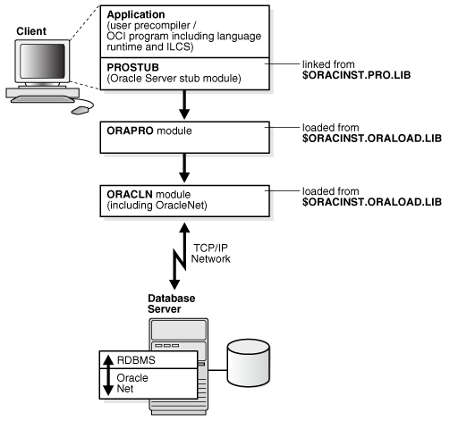

14 Database Applications
This chapter contains the following topics:
14.1 Overview of Database Applications
Oracle Programmatic Interfaces are tools for application designers who want to use SQL statements to access an Oracle database from within high-level language programs. The following types of programmatic interfaces are available:
-
The Precompiler Interface, which is a programming tool that enables you to embed SQL statements in high-level language source code.
-
The Oracle Call Interface (OCI), that enables to create high-level language applications that use function calls to access an Oracle database and control all phases of SQL statement execution.
On BS2000, the Oracle Database precompilers support programs written in C, C++, and COBOL programming languages.
This section contains the following topics:
See Also:
-
Oracle Database Programmer's Guide to the Oracle Precompilers for detailed information about Oracle Precompilers
-
Pro*C/C++ Programmer's Guide or Pro*COBOL Programmer's Guide
14.1.1 Architecture of the Programmatic Interfaces
All precompiler and Oracle Call Interface (OCI) applications are linked with a small stub module. This stub module dynamically loads the SQL runtime system of the Oracle Database precompilers from the ORALOAD library. Programs written in the following languages can be combined:
-
Pro*C/C++
-
Pro*COBOL (COBOL85 and COBOL2000)
Note:
OCI C and OCI COBOL programs cannot be combined; any attempt to do so results in execution errors. The entries into Oracle Database used by OCI C and OCI COBOL (for example, OLOGON) have identical names but different argument lists. For OCI COBOL, all arguments are by reference, that is, the parameter list contains all pointers. For OCI C, the numeric arguments are by value.
Oracle Database precompilers generate different SQLLIB function names for different languages. The following names are used:
-
SQ0XXX:COBOL -
sq2xxx:C
14.1.2 PL/SQL Support
The precompilers support PL/SQL. When using PL/SQL, you must specify SQLCHECK=FULL or SQLCHECK=SEMANTICS on the precompiler option line. The default is SQLCHECK=NONE. When requesting SQLCHECK, the precompiler must connect to a database. So, ensure that you provide the necessary connection information. (You may also want to set the DEFAULT_CONNECTION variable in the ORAENV file).
When SQLCHECK=SEMANTICS or SQLCHECK=FULL is specified, you must also specify USERID=username/password.
14.1.3 Building and Running a Programmatic Interface Application
To build and run a programmatic interface application, perform the following steps:
Figure 14-1 illustrates the sequence of events outlined in the preceding numbered list and how the programmatic interfaces use the program libraries.
Figure 14-1 Usage of Program Libraries by Programmatic Interfaces

Description of "Figure 14-1 Usage of Program Libraries by Programmatic Interfaces"
For more information, see the specific notes for the programmatic interfaces in this chapter.
14.2 Precompiler Applications
Learn about precompiler applications in this section. It includes the following topics:
14.2.1 About Using Precompilers
Oracle Database precompilers on BS2000 support LMS libraries for the files mentioned in this section. This section includes the following topics:
This functionality helps saving disk resources and provides clarity by grouping files in different libraries.
All LMS library elements that you use must be of element type "S”. The precompilers generate elements of type "S" if libraries are used. When you use LMS library elements, the precompilers build temporary files with the prefix "#T.”, which are deleted when the preprocessing completes successfully.
When you use LMS library elements, the element name that you specify must be the full element name including the suffix. The precompilers do not append the suffix to the element name.
14.2.1.1 Include Files
All standard include files are shipped in the LMS library, $ORACINST.PRO.INCLUDE.LIB. You must specify this LMS library or a user-defined include library for the EXEC SQL INCLUDE statements. Use the INCLUDE precompiler option, as follows:
* INCLUDE=$ORACINST.PRO.INCLUDE.LIB \
* INCLUDE=mylibrary
where mylibrary is the BS2000 file name of the user-defined library, such as PROC.INCLIB.
Note:
The order in which you specify the different INCLUDE options affects the performance of precompilation. You should place the commonly used files before the rarely used ones.
14.2.1.2 User-Specific Configuration Files
You can also specify a user-specific configuration file as an LMS-element using the following syntax:
* CONFIG=my_config_lib[config_element]
where my_config_lib is the BS2000 file name of the configuration library and config_element is the full name of the element.
You must use brackets when specifying the configuration element, as shown in the following example.
* CONFIG=CONFIG.LIB[PROCOB.CFG]
14.2.1.3 Input, Output, and List-files
Besides using BS2000 files, you can also use the LMS library elements for precompiler I/O using the INAME, ONAME, and LNAME options.
If you do not specify a library file name and an element, then the Oracle Database precompilers generate BS2000 ISAM files by default. The only option that you must enter is the INAME option. This can be either a BS2000 file name, or a library file name and the name of an element from the LMS library.
For example:
* INAME=my_input_lib[my_element] \ * ONAME=my_output_lib[my_element] \ * LNAME=my_list_lib[my_element] \
where my_input_lib is the BS2000 file name of the particular library and my_element is the name of the element including the specific suffix.
Note:
You must use brackets when specifying the LMS library element.
In the following example, Pro*C generates an output file with the name SAMPLE.C as the ONAME option has been omitted:
* INAME=INPUT.LIB[SAMPLE.PC] \ * LNAME=LIST.LIB[SAMPLE.LST]
14.2.1.4 Additional Remarks About Using Precompilers
The following are some additional remarks on this release of Oracle Database 19c for Fujitsu BS2000:
-
Only compilers and compiler versions supporting the ILCS Standard Linkage are supported. If the Oracle Database detects a call from a user program not using the Standard Linkage conventions, then it terminates the task and displays the message number 5002 or 5003.
-
If
ONAMEis not specified when starting a precompiler, then the precompiler generates a default name, which consists of the last part ofINAMEwith the relevant suffix. For example, if the name of the C program you want to compile isMYPROG.PERS.TEST.PC, and ifONAMEis omitted, then Pro*C generates an output file with the nameTEST.C. -
If you work with float variables, then you may encounter rounding problems. The workaround is to declare the float variables as double variables instead.
14.2.2 Precompiler Pro*C/C++
This section describes the procedure for using Pro*C/C++. It includes the following topics:
14.2.2.1 Starting Pro*C
To start the Pro*C precompiler, enter the following:
/START-EXECUTABLE (*LINK(ORALOAD),PROC) * INAME=myprog.PC ONAME=myprog.C [options]
where:
myprog is the name of the C program.
options specifies Pro*C options. For a list and description of the valid options, see Pro*C/C++ Programmer's Guide.
Note:
You must use a separate precompiler option INCLUDE for each path you want to specify, unlike as described in Pro*C/C++ Programmer's Guide. A list as allowed for the option SYS_INCLUDE may cause the precompiler to loop.
14.2.2.2 Pro*C Include, System Configuration and Demo Files
The Pro*C include files, demo files, and system configuration files are shipped under:
$ORACINST.PRO.INCLUDE.LIB $ORACINST.C.DEMO.*.PC $ORACINST.UTM.DEMO.*.PC $ORACINST.CONFIG.PCSCFG.CFG
An example of a BS2000 procedure for precompilation and compilation is included in the Oracle Database software under the name $ORACINST.P.PROC.
14.2.2.3 SQLLIB Calls
If you want to program explicit C calls to SQLLIB functions, then you must call sq2xxx instead of sqlxxx. For example, call sq2cex instead of sqlcex.
14.2.2.4 Linking Pro*C Programs
To link a Pro*C program, you need:
-
The common runtime environment,
CRTE. -
The Pro* library
$ORACINST.PRO.LIB, which contains the stub module,PROSTUB.
To link your program, you must create your user-specific link procedure. An example of such a link procedure is included in the Oracle Database software with the name, $ORACINST.P.PROLNK.
14.2.2.5 The Pro*C SQLCPR.H Header File
If you are making calls to Pro*C functions, such as sq2cls() or sq2glm(), then you can include the SQLCPR.H file into the C programs to verify that the functions calls are correct.
In the Pro*C programs, add the following line:
EXEC SQL INCLUDE SQLCPR
as you would for SQLCA or SQLDA.
14.2.2.6 UTM Applications
You can use Pro*C to write UTM program units.
See Also:
openUTM Database Applications14.2.3 Precompiler Pro*COBOL
This section describes the procedure for using Pro*COBOL. It includes the following topics:
14.2.3.1 Starting Pro*COBOL
To start the Pro*COBOL precompiler, enter the following commands:
/START-EXECUTABLE (*LINK(ORALOAD),PROCOB) * INAME=myprog.PCO ONAME=myprog.COB [options]
where:
myprog specifies the COBOL program.
options specifies the Pro*COBOL options.
Note:
The Pro*COBOL option MAXLITERAL defaults to 180, and not 256, as shown in the Pro*COBOL Programmer's Guide. The option FORMAT=TERMINAL is not supported.
See Also:
Pro*COBOL Programmer's Guide for PRO*COBOL options14.2.3.2 Pro*COBOL Include, System Configuration, and Demo Files
The Pro*COBOL include files, demo files, and system configuration files are shipped under:
$ORACINST.PRO.INCLUDE.LIB $ORACINST.COBOL.DEMO.*.PCO $ORACINST.UTM.DEMO.*.PCO $ORACINST.CONFIG.PCBCFG.CFG
An example of a BS2000 procedure for precompilation and compilation is included in your Oracle Database software under the name $ORACINST.P.PROCOB2000.
14.2.3.3 SQLLIB Calls
If you want to program explicit COBOL calls to SQLLIB functions, then call SQ0XXX instead of SQLXXX. For example, call SQ0ADR instead of SQLADR.
14.2.3.4 Linking Pro*COBOL Programs
To link a Pro*COBOL program, you need:
-
The common runtime environment,
CRTE. -
The Pro* Library
$ORACINST.PRO.LIB, which contains the stub module,PROSTUB. -
Unicode, which is only supported with COBOL2000. This might generate calls to the BS2000-Macro
NLSCNV. To resolve theGNLCNVentry, use the BS2000 XHCS library.
See Also:
Fujitsu BS2000 manual XHCS for more information about theGNLCNV
entry
To link your program, you must create your own user-specific link procedure. An example of such a link procedure is included in your Oracle Database software with the name, $ORACINST.P.PROLNK.
14.2.3.5 openUTM Applications
You can use Pro*COBOL to write openUTM (Universal Transaction Monitor) program units. Pro*C and Pro*COBOL program units can be combined in an openUTM application.
See Also:
openUTM Database Applications for more information14.2.3.6 Additional Information About Pro*COBOL Constructs
When using Pro*COBOL, be careful about the following constructs with paragraphs and EXEC statements, because the precompiler generates a paragraph heading for the code generated from these EXEC statements:
| Before precompiling | After precompiling |
|---|---|
|
COB-LABEL1. |
COB-LABEL1. |
|
. |
. |
|
. |
. |
|
EXEC SQL.... |
SQL-LABEL1. |
|
. |
. |
|
. |
. |
|
COB-LABEL2. |
COB-LABEL2. |
Before precompiling, the statement PERFORM COB-LABEL1 runs the code in paragraph COB-LABEL1 until the COB-LABEL2 heading is reached. However, the precompiler generates a paragraph heading, SQL-LABEL1, for the code generated from the EXEC SQL statement.
As a result, after precompiling, PERFORM COB-LABEL1 runs the code in the paragraph COB-LABEL1 until the SQL-LABEL1 heading is reached. The workaround for this problem is to use SECTIONS or to run PERFORM COB-LABEL1 THRU COB-LABEL2.
A COPY statement as the first statement in WORKING-STORAGE SECTION may result in a wrong code generation if copied structures must be continued by non-copied code. This is because the precompiler generates its data definitions before the first data definition of the source program. To avoid this, insert a FILLER definition as the first line in WORKING-STORAGE SECTION, as follows:
01 FILLER PIC X
14.3 Oracle Call Interface Applications
On Fujitsu BS2000, the Oracle Call Interface (OCI) supports the programming languages, C and COBOL.
When you use the set of host language calls that comprise the Oracle Call Interface, you can access the data in an Oracle database by programs written in the C and COBOL programming languages.
Note:
The precompiler products from Oracle offer a higher level interface to the Oracle Database. A single precompiler call is translated to several OCI calls. As the precompilers are easy to use, and in a few cases offer more or different functionality than OCI, you may prefer to use the precompilers for some applications.
See Also:
Oracle Call Interface Programmer's Guide for more information about OCI calls14.3.1 Linking OCI Applications
To link OCI programs, you need:
-
The common runtime environment, CRTE.
-
The Pro* Library
$ORACINST.PRO.LIB, which contains the stub modulesOCI$COBandPROSTUB.
When linking OCI COBOL programs, OCI$COB must always be included before PROSTUB.
To link your program, you must create your own user-specific link procedure. An example of such a link procedure is included in your Oracle Database software with the name $ORACINST.P.PROLNK.
For example, to link your program, call the BS2000 procedure as follows:
/CALL-PROCEDURE $ORACINST.P.PROLNK,dir,module,TYPE=OCIC
or:
/CALL-PROCEDURE $ORACINST.P.PROLNK,dir,module,TYPE=OCICOB
where, the module to be linked is stored in dir.LIB.
The OCI include files and demo files are shipped under:
$ORACINST.RDBMS.DEMO.OCI.LIB $ORACINST.RDBMS.DEMO.*.C $ORACINST.RDBMS.DEMO.*.COB
14.4 The Object Type Translator
This section describes how to use the Object Type Translator (OTT) on BS2000. It includes the following topics:
14.4.1 Starting Object Type Translator
The Object Type Translator (OTT) is based on Java and can only be started in the POSIX environment. You must use the JDBC thin driver to connect to the database. The connect string is specified in the url option, as follows:
url=jdbc:oracle:thin:@hostname:port:sid
In the following example, OTT will connect to the database with the service identifier orcl, on the host myhost, that has a TCP/IP listener on port 1521.
For example:
ott userid=username-for-scott/password-for-scott url=jdbc:oracle:thin:@myhost:1521:orcl intype=demoin.typ outtype=demoout.typ code=c hfile=demo.h
See Also:
Pro*C/C++ Programmer's Guide for more information about Object Type Translator14.5 Oracle Database Applications in POSIX Program Environment
You can run application programs either in the BS2000 program environment or in the POSIX program environment. This section describes how you can build Oracle database applications that can run in the POSIX program environment.
You must precompile and compile the Pro* application or OCI application as described in the previous chapters.
When linking the application, you must include the stub module
PROSTUBX from the
$ORACINST.PROX.LIB library instead of
PROSTUB and you must add the following lines in the
BS2000 procedure for linking:
/SET-FILE-LINK BLSLIB01,$.SYSLNK.CRTE.POSIX
/SET-FILE-LINK BLSLIB02,$.SYSLIB.POSIX-SOCKETS.version_number
/SET-FILE-LINK BLSLIB03,$.SINLIB.POSIX-BC.version_numberNote:
The $.SYSLNK.CRTE.POSIX library must be the first library in the
search order for the resolution of external references. Oracle
recommends a search order as mentioned above.
To start an Oracle Database application in the POSIX environment by using BS2000 SDF commands, set the BS2000 SDF-P variable SYSPOSIX.PROGRAM-ENVIRONMENT to SHELL.
You can set additional POSIX environment variables by using the BS2000 SDF-P variable SYSPOSIX.
The following example shows how to set the SDF-P variable SYSPOSIX to run an application in the POSIX environment:
/DECL-VAR SYSPOSIX,TYPE=*STRUCT(DEF=*DYN),SCOPE=*TASK(STATE=*ANY)
/SET-VAR SYSPOSIX.PROGRAM-ENVIRONMENT='SHELL'
/SET-VAR SYSPOSIX.ORACLE-HOME='oracle_home_path'
/SET-VAR SYSPOSIX.ORACLE-SID='oracle_sid'14.6 openUTM Database Applications
This section describes how to use the BS2000 transaction monitor openUTM for coordinated interoperation with Oracle Database 19c. The following topics are covered:
14.6.1 Operation of Oracle Database Using openUTM Programs
Universal Transaction Monitor (openUTM) controls the execution of user programs that can be used from a large number of terminals at the same time.
An openUTM application consists of a structured sequence of processing stages that are supplied with access rights for the specific user. These stages, in turn, consist of openUTM transactions that are carried out either in their entirety, or not at all.
If several users use openUTM at the same time, then simultaneous access to the shared database is also usually required. The database/data communications system (DB/DC system), Oracle Database/openUTM, synchronizes access by openUTM applications to Oracle Database, and ensures that the database and the transaction monitor are always in a shared consistent state. In the event of a system failure, the DB/DC system performs an automatic recovery, which ensures that the database remains in a consistent state that is synchronized with openUTM.
Synchronization of Oracle Database and openUTM is done through the XA interface. The XA interface is an X/Open interface for the coordination between database systems and transaction monitors.
See Also:
Oracle Database Development Guide for a description of the concepts of the XA interface14.6.2 Distributed openUTM Files
When you install Oracle Database, as described in Oracle Database Installation and Deinstallation, openUTM related software and files are installed in the installation user ID. The distributed openUTM files include:
-
XAO.LIBThis file contains the connection module for the XA interface.
-
The following files provide examples of procedures and programs:
UTM.DEMO.P.COMPILE.C UTM.DEMO.P.COMPILE.COBOL UTM.DEMO.P.KDCDEF UTM.DEMO.P.KDCROOT UTM.DEMO.P.PROBIND UTM.DEMO.P.PROSTRT UTM.DEMO.CSELEMP.PC UTM.DEMO.SELDEP.PCO UTM.DEMO.SELEMP.PCO UTM.DEMO.UPDEMP.PCO UTM.DEMO.ERRSQL.C UTM.DEMO.ERRTXT.C
14.6.3 DBA Responsibilities
This section describes the responsibilities of the DBA or the administrator of the openUTM application.
The administrator of the openUTM application must define the open string for the XA interface with help from the application developer. This open string must be included in the openUTM start parameters.
The DBA must ensure that the data dictionary view DBA_PENDING_TRANSACTIONS exists. The DBA must also grant the SELECT privilege to the data dictionary view DBA_PENDING_TRANSACTIONS for all Oracle users specified in the XA open string. Use the following example to grant the SELECT privilege to user scott:
grant select on DBA_PENDING_TRANSACTIONS to scott;
The Oracle users are identified in the open string with the item Acc.
See Also:
"Defining an Open String" for more information14.6.4 Developing an Oracle Database/openUTM Application
Oracle Database 19c on BS2000 supports openUTM V6.5 or higher. openUTM supports the XA interface. Oracle Database 19c on BS2000 coordinates with openUTM through this XA interface.
This section includes the following topics:
14.6.4.1 How to Build an Oracle Database Application with openUTM
The main steps involved in developing an Oracle Database application for coordinated inter-operation with openUTM are as follows:
Building the openUTM program units
Refer to the openUTM manual Programming Applications with KDCS for COBOL, C, and C++.
Defining the configuration
Refer to the following openUTM manuals:
-
Generating Applications
-
Administering Applications
An Oracle Database/openUTM application requires the following information for execution:
-
Information about the application
-
Username/password with access protection
-
Information about the terminal and communication partners
-
Information about the transaction codes (TAC’s)
These properties collectively form the configuration, which is stored in the KDCFILE file. The configuration definition is carried out by the KDCDEF utility.
This section gives the descriptions for openUTM KDCDEF control statements that are important for connecting to the Oracle database. They are:
-
DATABASEWhen the Oracle Database/openUTM application is generated, you must specify that openUTM communicates with the Oracle Database. Enter the following command to specify openUTM communication with the database:
DATABASE TYPE=XA,ENTRY=XAOSWD
where
TYPE=XAspecifies the use of the XA interface andENTRY=XAOSWDspecifies the name of the XA switch for the Oracle database (for dynamic registration). -
OPTIONIf you specify the corresponding
GENoperand in theOPTIONcommand, then theKDCDEFutility also produces the source-code for theKDCROOTtable module. -
MAXAnother important operand is
APPLIMODE, which is specified in theMAXcommand. This determines the restart behavior after a system failure. The syntax ofMAXis as follows:MAX APPLINAME=name[,APPLIMODE={S[ECURE]|F[AST]}] [,ASYNTASKS=number][...]
APPLIMODE=SECUREmeans that openUTM continues after an application malfunction with a coordinated warm-start of the openUTM application and the Oracle database.If you specify
APPLIMODE=FAST, then openUTM application restart is not executed, as openUTM does not store the restart information. In the event of an error, the application starts from scratch. Transactions that are still open after an openUTM-application malfunction are rolled back automatically.
See the UTM.DEMO.P.KDCDEF file for an example procedure for building the KDCFILE and the KDCROOT table module.
Translating the KDCROOT table module and openUTM program units
The source of the KDCROOT table module must be compiled with the BS2000 Assembler and the openUTM program units must be compiled with the corresponding programming language compilers. See the example procedure UTM.DEMO.P.KDCROOT for the compilation of the KDCROOT table module.
Linking the openUTM application program
The openUTM application program is produced by linking the KDCROOT table module with the openUTM program units.
You must include the stub module XAOSTUB:
INC-MOD LIB=$ORACINST.XAO.LIB,ELEM=XAOSTUBNote:
Instead of writing the linking procedure, you should use the example procedure UTM.DEMO.P.PROBIND and apply modifications as needed.
To write your own linking procedure, study the example carefully before writing.
Starting the openUTM application
An example procedure for starting the openUTM application is in the UTM.DEMO.P.PROSTRT file.
When starting the openUTM application, you must specify the start parameters for both openUTM and Oracle Database.
The openUTM start parameters are described in the openUTM manual Using openUTM Applications on BS2000 Systems.
The start parameter for using the XA interface for coordinated inter-operation with Oracle Database is:
.RMXA RM="Oracle_XA",OS="<ORACLE open string>"
14.6.4.2 Defining an Open String
This section describes how to construct an open string and includes the following topics:
The transaction monitor uses this string to connect to the database. The maximum number of characters in an open string is 256. Construct the string as follows:
Oracle_XA{+required_fields...}[+optional_fields...]
where the required_fields are:
-
Acc=P/user/access_info -
SesTm=session_time_limit
and the optional_fields are:
-
DB=db_name -
MaxCur=maximum_no_of_open_cursors -
SqlNet=connect_string -
DbgFl=value_from_1_to_15
Note:
-
You can enter the required fields and optional fields in any order when constructing the open string.
-
All field names are case-insensitive, although their values may or may not be case-sensitive depending on the system.
-
You cannot use the "+" character as part of the actual information string.
14.6.4.2.1 Required Fields
The required fields for the open string are:
| Item | Meaning |
|---|---|
|
|
Specifies user access information. |
|
|
Indicates that explicit user and password information is provided. |
|
|
Specifies the Oracle Database user name. |
|
|
Specifies the Oracle Database password. |
For example, Acc=P/username-for-scott/password-for-scott indicates that the user and password information is provided.
Ensure that the user has the SELECT privilege on the DBA_PENDING_TRANSACTIONS table in the previous example.
Note:
For security reasons, openUTM supports the placeholders*UTMUSER and *UTMPASS for user and access_info. The values for these openUTM placeholders are specified through the openUTM KDCDEF generation. When the xa_open call is executed, openUTM replaces these placeholders with the generated values. Using these placeholders is mandatory in openUTM V6.4, but it is optional in openUTM V6.5.
| Item | Meaning |
|---|---|
|
|
Specifies the maximum amount of time a transaction can be inactive before it is automatically deleted by the system. |
|
|
Specifies the maximum time limit in seconds between the start of a global transaction and the commit or roll back of this transaction. |
14.6.4.2.2 Optional Fields
Optional fields for the open string are described in the following table:
| Item | Meaning |
|---|---|
|
|
Specifies the database name. |
|
|
Indicates the name used in Oracle Database precompilers to identify the database. Application programs that use only the default database for the Oracle Database precompiler, that is, application programs that do not use the AT clause in their SQL statements, must omit the Note: This default database is specified in the Applications that use explicitly–named databases should indicate that database name in their For example, |
For more information about precompilers, refer to the section "Using Precompilers with openUTM" later in this chapter.
| Item | Meaning |
|---|---|
|
|
Specifies the number of cursors to be allocated when the database is opened. It serves the same purpose as the precompiler option |
|
|
Specifies the number of open cursors. |
For example, MaxCur=5 indicates that the process should try to keep five open cursors cached.
See Also:
Oracle Database Programmer's Guide to the Oracle Precompilers for more information aboutmaxopencursors| Item | Meaning |
|---|---|
|
|
Specifies the SQL*Net connect string. |
|
|
Specifies the string that is used to open a connection to the database. This can be any supported Oracle Net Services connect string. |
For example:
SqlNet=MADRID_FINANCE indicates an entry in TNSNAMES.ORA. For more information, refer to Oracle Net Services in this guide.
| Item | Meaning |
|---|---|
|
|
Specifies if debugging should be enabled (debug flag). For more information refer to “About Debugging” section in this chapter. |
14.6.4.2.3 Examples
This section contains examples of open strings for the XA interface.
Note:
If the string is longer than one line, then refer to the openUTM documentation for information about how to split the string.For the bequeath protocol of Oracle Net Services:
Oracle_XA+Acc=P/username-for-scott/password-for-scott+SesTm=0+DbgFl=15
For other protocols of Oracle Net Services:
Oracle_XA+SqlNet=MADRID_FINANCE+Acc=P/username-for-scott/password-for-scott+SesTm=0 Oracle_XA+DB=finance+SqlNet=MADRID_FINANCE+Acc=P/username-for-scott/password-for-scott +SesTM=0
The optional fields LogDir, Loose_Coupling, SesWT, and Threads are not supported.
See Also:
Oracle Database Development Guide for more information about the fields in the open string14.6.4.3 Using Precompilers with openUTM
You can choose from the following options when interfacing with precompilers:
Run all the precompiler programs with the option release_cursor set to no. Precompiler programs may be written in C or COBOL. The precompiler Pro*C is used in the examples.
14.6.4.3.1 Using Pro*C with the Default Database
If Pro*C applications access the default database, then ensure that the DB=db_name field used in the open string is not present. The absence of this field indicates the default connection as defined in the ORAENV file, and only one default connection is allowed for each process.
The following is an example of an open string identifying a default Pro*C connection:
Oracle_XA+SqlNet=MADRID_FINANCE+Acc=P/username-for-scott/password-for-scott+SesTm=0
Here, DB=db_name is absent, indicating an empty database identifier string.
The following is the syntax of a select statement:
EXEC SQL SELECT ENAME FROM EMP;
14.6.4.3.2 Using Pro*C with a Named Database
If Pro*C applications access a named database, then include the DB=db_name field in the open string. Any database you refer to must reference the same db_name specified in the corresponding open string.
An application may access the default database, as well as one or more named databases, as shown in the following examples.
For example, if you want to update an employee's salary in one database, the department number deptno in another, and the manager information in a third database, then you must configure the following open strings in the transaction manager:
Oracle_XA+SqlNet=MADRID_FINANCE1+Acc=P/username-for-scott/password-for-scott+SesTm=0
Oracle_XA+DB=MANAGERS+SqlNet=MADRID_FINANCE2+Acc=P/username-for-scott/password-for-scott+SesTm=0
Oracle_XA+DB=PAYROLL+SqlNet=MADRID_FINANCE3+Acc=P/username-for-scott/password-for-scott+SesTm=0
There is no DB=db_name field in the first open string.
In the application program, enter declarations such as:
EXEC SQL DECLARE PAYROLL DATABASE; EXEC SQL DECLARE MANAGERS DATABASE;
Again, the default connection corresponding to the first open string that does not contain the db_name field, does not require a declaration.
When performing the update, enter statements similar to the following:
EXEC SQL AT PAYROLL update emp set sal=4500 where empno=7788; EXEC SQL AT MANAGERS update emp set mgr=7566 where empno=7788; EXEC SQL update emp set deptno=30 where empno=7788;
There is no AT clause in the last statement because it refers to the default database.
You can use a character host variable in the AT clause, as shown in the following example:
EXEC SQL BEGIN DECLARE SECTION; db_name1 CHARACTER(10); db_name2 CHARACTER(10) EXEC SQL END DECLARE SECTION; . . set db_name1 = 'PAYROLL' set db_name2 = 'MANAGERS' . . EXEC SQL AT :db_name1 UPDATE... EXEC SQL AT :db_name2 UPDATE...
See Also:
Pro*COBOL Programmer's Guide and Pro*C/C++ Programmer's Guide that discusses concurrent logonsNote:
-
openUTM applications must not create Oracle database connections of their own. Therefore, an openUTM user is not allowed to issue
CONNECTstatements within an openUTM program. Any work performed by them would be outside the global transaction, and may confuse the connection information given by openUTM. -
SQL calls must not occur in the openUTM start exit routine, however may occur in the conversation exit routine “Vorgangs-Exit”.
14.6.4.4 SQL Operations
UTM application program units must use embedded SQL. Calls to the Oracle Call Interface (OCI) are not allowed.
The following SQL operations are discussed:
14.6.4.4.1 CONNECT
A connection is implicitly established when the UTM task is started. This connection uses the data specified in the open string. Additional explicit CONNECT operations issued by the program units are not allowed.
14.6.4.4.2 COMMIT
An explicit COMMIT statement is not allowed in UTM program units. The openUTM automatically issues a COMMIT statement at PEND RE, PEND FI, PEND SP, or PEND FC operation.
14.6.4.4.3 ROLLBACK
An explicit ROLLBACK statement is not allowed in UTM program units. The openUTM automatically issues a ROLLBACK statement on encountering a PEND ER, PEND RS, PEND FR, or RSET operation.
14.6.4.4.5 Cursor Operations
A cursor is valid only until a PEND is executed. Because of a possible task change during a PEND KP, PEND PA, or PEND PR, you cannot perform operations on a previously filled cursor such as OPEN or FETCH after a PEND KP, PEND PA, or PEND PR.
However, you can open and fetch a new cursor after PEND KP. The
alternative to using PEND KP is to use the PGWT-call, which
waits until it receives an input from the terminal, or to assign the same
TACCLASS to subsequent programs after a PEND PA or
PR operation.
See Also:
The openUTM manual, Programming Applications with KDCS for COBOL, C and C++14.6.4.4.6 Dynamic SQL
You may use dynamic SQL as described in Oracle Database Programmer's Guide to the Oracle Precompilers.
14.6.4.4.7 PL/SQL
COMMIT, ROLLBACK, CONNECT, and SAVEPOINT statements are not allowed in PL/SQL programs running under UTM.
14.6.4.4.8 Autocommit
Avoid autocommit operations as they violate the synchronization between Oracle Database and UTM transactions. Take precautions when using the DDL operations, as these often contain implicit autocommits.
For example, DDL statements such as, CREATE TABLE, DROP TABLE, and CREATE INDEX are not allowed in a global transaction because they force the pending work to be committed.
14.6.4.5 openUTM Operations
This section describes the Oracle Database-specific points that you must consider when using UTM operations. It describes the effect of the PEND (Program Unit End), and RSET (Reset) operations of openUTM. These operations represent the common synchronization points between openUTM and the Oracle Database.
The following openUTM operations are discussed:
When you issue a PEND call, UTM calls the Oracle Database internally through the XA interface for synchronization. When the PEND takes place:
-
The user dialog/transaction is detached from the executing task.
-
Any resource that is still attached to the user is released.
14.6.4.5.1 RSET and PEND RS
Resetting a UTM transaction implies rolling back the Oracle Database transaction.
14.6.4.5.2 PEND ER and PEND FR
When using these calls to terminate a UTM transaction, the Oracle Database transaction is also rolled back.
14.6.5 Troubleshooting
This section discusses how to recover data if there are problems or a system failure. Both trace files and recovering pending transactions are discussed in the following sections:
14.6.5.1 Trace Files
The Oracle XA library logs any error and tracing information to its trace file. This information is useful in supplementing the XA error codes. For example, it can indicate whether an open failure is caused by an incorrect open string, failure to find the Oracle Database instance, or a login authorization failure. The trace file is created in the BS2000 user ID, where the openUTM application runs. The name of the trace file is:
ORAXALOG.pid-db_name-date.TRC
where
pid is the process identifier (TSN).
db_name is the database name you specified in the open string field DB=db_name.
date is the date when the trace file is created.
14.6.5.1.1 Trace File Examples
Examples of trace files are discussed in this section.
The following example shows a trace file for an application's task with the TSN 1234 that was opened on April 2nd 1999. The DB field for this application was not specified in the open string when the resource manager was opened
ORAXALOG.1234-NULL-990402.TRC
The following example shows a trace file that was created on December 15th 1998 by the BS2000 task with the TSN 5678. The DB field was specified as FINANCE in the open string when the resource manager was opened.
ORAXALOG.5678-FINANCE-981215.TRC
Each entry in the trace file contains information that looks similar to:
1032.2: xa_switch rtn ORA-22
where 1032 is the time when the information is logged, 2 is the resource manager identifier, xa_switch is an internal identifier of the Oracle XA library, and ORA-22 is the returned Oracle database information.
14.6.5.2 About Debugging
You can specify the DbgFl (debug flag) in the open string.
Depending on the debugging level (low:DbgFl=1, high:DbgFl=15), you can get more or less debug entries in the trace file ORAXALOG.pid-db_name-date.TRC.
See Also:
Oracle Database Development Guide for more information14.6.5.3 In-Doubt or Pending Transactions
In-doubt or pending transactions are transactions that have been prepared but not yet committed in the database. Generally, openUTM resolves any in-doubt or pending transaction. However, the Database Administrator may have to override an in-doubt transaction when working with UTM-F, that is, APPLIMODE=FAST. For example, when the in-doubt transaction is:
-
Locking data that is required by other transactions.
-
Not resolved in a reasonable amount of time.
Note:
Overriding in-doubt transactions can cause inconsistency between openUTM and the database. For example, if the DB transaction is committed by the Database Administrator and the openUTM application rolls back the transaction in the warm-start phase, then the Oracle Database cannot roll this committed transaction back, therefore, causing an inconsistency.
14.6.5.4 Oracle Database Tables of the SYS User
The following tables of the SYS user contain transactions generated by regular Oracle Database applications and Oracle Database/openUTM applications:
-
DBA_2PC_PENDING -
DBA_2PC_NEIGHBORS -
DBA_PENDING_TRANSACTIONS -
V$GLOBAL_TRANSACTION
See Also:
For detailed information about how to use these tables, refer to the sections in the Oracle Database Administrator’s Guide that discuss failures during two-phase commit and manually overriding in-doubt transactions
For transactions generated by Oracle Database/openUTM applications, the following column information applies specifically to the DBA_2PC_NEIGHBORS table:
-
The
DBIDcolumn is alwaysxa_orcl. -
The
DBUSER_OWNERcolumn is alwaysdb_namexa.oracle.com.
Remember that the db_name is always specified as DB=db_name in the open string. If you do not specify this field in the open string, then the value of this column is NULLxa.oracle.com for transactions that are generated by Oracle Database/openUTM applications.
For example, use the following sample SQL statement to find out more information about in-doubt transactions that are generated by Oracle Database/openUTM applications.
SELECT * FROM DBA_2PC_PENDING p, DBA_2PC_NEIGHBORS n WHERE p.LOCAL_TRAN_ID = n.LOCAL_TRAN_ID AND n.DBID = 'xa_orcl';